Are you looking for a strategic lever for your B2C business or your investment portfolio? Choose your path:
VC and Partners
Discover the strategic lever for Newcos and your portfolio.
Discover the VC OpportunityConnect the DOTS in Practice
Discover how our B2B Partners transform their Value Proposition through customized AI Ecosystems and NBD (Next Best Decision) L3 paths.

From Tax to Management Control
The Case: A Consulting Firm wires its clients on the CtD app to deliver a new directional Value Proposition.
The Solution: The AI guides the entrepreneur step by step. It transforms anxiety over dropping margins into a diagnostic path, landing in the SME Gym to configure a predictive dashboard.

Adaptive Training & Sales Performance
The Case: A Training Boutique converts its static manuals into a "Pocket Coach" always available for the sales force.
The Solution: Delivery adapts in real-time. By reading the local Profile, the AI resolves the salesperson's stalemate by generating the perfect negotiation script based on their cognitive style.

1-to-1 Advisory for Talent Development
The Case: An Executive Coach digitizes their methodological framework to eliminate dispersion between live sessions.
The Solution: The manager uses CtD to vent their frustration. The diagnostic engine maps the leadership gap and routes the user to an operational delegation task to be completed before the meeting.

The "Walled Garden" for the Wellness Sector
The Case: A network of health professionals creates a shared ecosystem to improve retention and automate referrals.
The Solution: The patient is not abandoned. The AI analyzes the symptom, identifies the postural cause, and immediately generates a cross-selling CTA for a check-up with the physiotherapist partner.